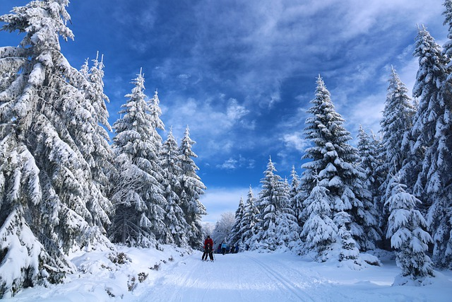
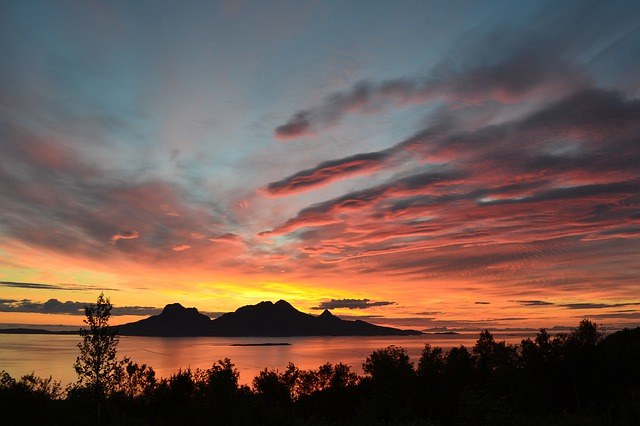

I´ve decided to write this list i guess you can say to the universe.
The last few years have been challeging, to say the least.
Not just the resent pandamic, but on a personal level.
Deppression and anxiety, a break up, finacial insecurety the list goes on.
So like the rest of the world, i want to leave past years behind and start anew.
This are the things i dream of and challenges to overcome, for what i hope will be my year!
The swdish classic
I will have a challange with this one!
So the swedish classic is basically a compilation of four big swedish races.
The races or competitions, are in four different diciplines:
Cross country skiing, cykling, open water swimming and cross country running.
The different races are called: Vasaloppet, Vätternrundan, Vansbrosimmet och Lidingöloppet.
And you are to complete these different races during a 12-month period.
In Vasaloppet you cross country skii for 90 kilometers, this is in march.
In Vätternrundan you do cykling for 300 kilometers, this is in june.
In Vansbrosimmet you open water swim for 3 kilometers, this is in july.
And at Lidingöloppet you do cross country running for 30 kilometers, this is in september.
After you complete these four events, you recieve a diploma. Can´t wait to se how hard i can push myself!

The magic of midnight sun
I´ve dreamt of seeing the midnight sun for so long.
This is a phenomenon that occurs in the northest parts of Sweden.
During a few days the sun does not set.
It basically reaches the horizon and stops there.
The summers in sweden is always very bright even in the late hours.
But, if you go up north, the day does not seam to end.
My wish is to go there with a close friend, or alone and just watch this magical moment.

My last initiation to adulthood
A driving license is something that gives you more freedom, and increases your chances to get hierd.
Ofcourse i wanted one for a long time, but i have neither had the time or recources to get one.
Now i have more time to dedicate and some recourses to fund my driving license.
I would also like to get a car, my dream car is an vintage volkswagen van, but one step at a time!
One apartment garden comming up!
One day i will have a house, with the most wonderful garden there is.
There will be vegtebles, berrys, fruit trees, chicken and bees.
But for now i will start growing what i can at home. To bring in more green and colour to my life.
Watching something grow, that you planted and nurtured is one of the most satisfiyng thing i know.
I´ve had a few plants before, but this year i will fill as much of my apartment i can with life.
The most important
Happiness is something so hard to describe, and yet there are endless ways.
It´s something so important, but somehow neglected for things that seem more urgent.
It can be lost in darkness, and you dare not hope for it´s return. Becouse not reaching it hurts.
Happiness in the little thing, happiness in the grand, happiness you find in others and the happiness within.
This one will be my biggest challange, but the one i cannot fail.
.jpg)